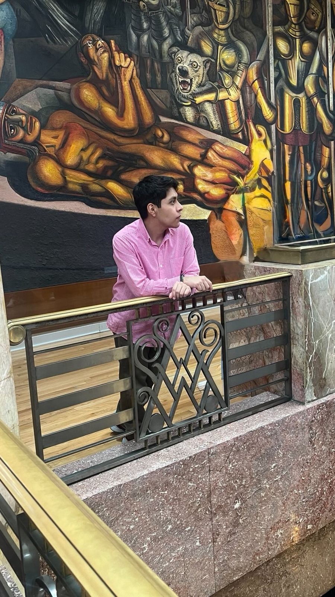
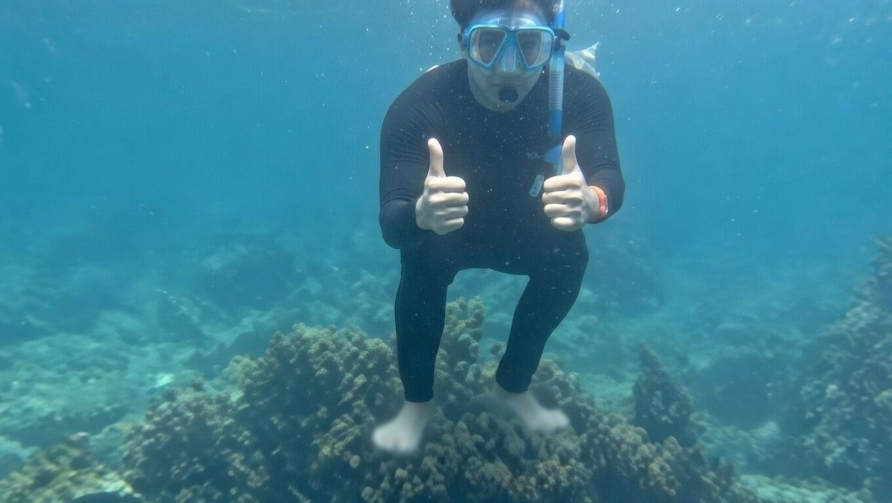

I am Oscar Iván Montiel Juárez, a 21-year-old Computer Engineering student at the UNAM Faculty of Engineering in Mexico City. My passion for cybersecurity began when I was just 12 years old. Out of curiosity, I am currently diving into data science, and it has been an incredibly exciting journey.
I am an active person who loves sports. Swimming is my escape during vacations, I seek out places with lakes or rivers and spend hours in the water. I enjoy cliff jumping too; if there is a waterfall or a diving board, I will probably jump off it.
Running is another passion, and my favorite spot in all of Mexico City is the Jardín Botánico. Even at noon, the trees provide cool shade, and the air always feels fresh. I also hit the gym almost daily whether it is lifting weights, running, or swimming when the weather permits.
Every Saturday, without fail, you will find me watching boxing. I genuinely enjoy the sport. Music is my constant companion whether exercising or studying, there is always something playing. At least once a semester, I make time for karaoke nights with friends. I recently discovered a love for pool and I am actually pretty good at it! Occasionally, when I have free time, I head to Six Flags for the adrenaline rush.
